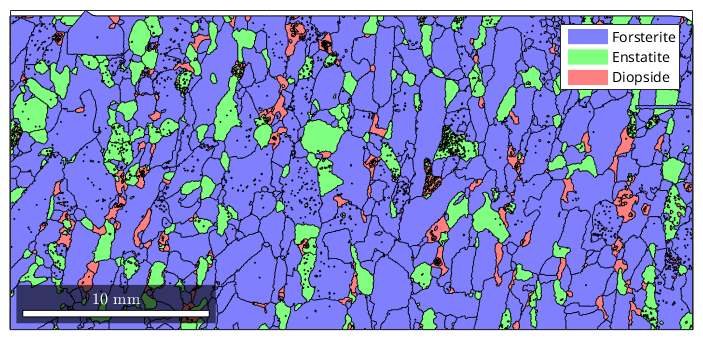
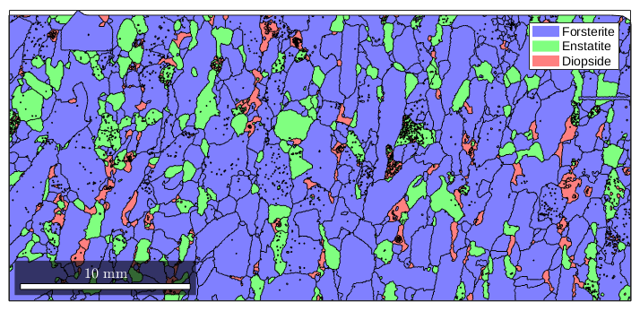
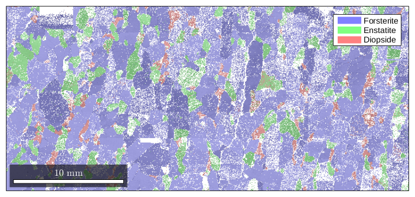
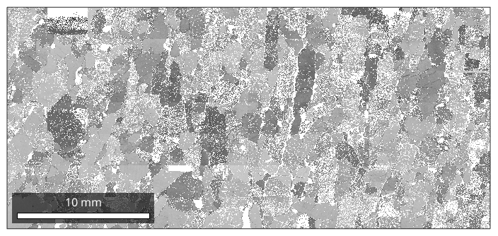
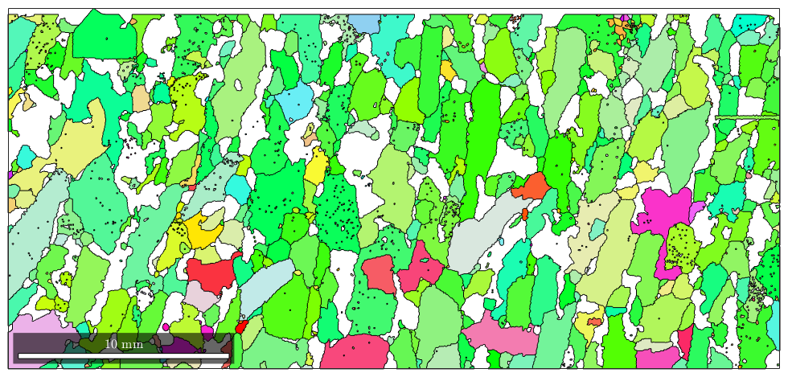
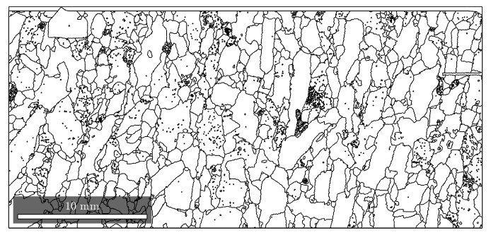
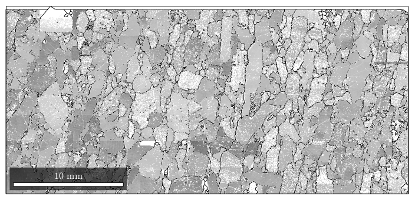
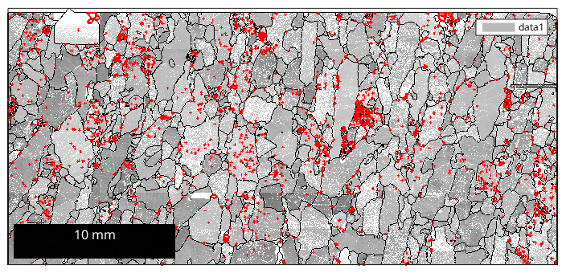

Overview about colorizing grains and (special) grain boundaries
| On this page ... |
| Plotting grains and combined plots |
| Visualizing grain boundaries |
One of the central issues analizing grains is the visualization by spatial maps. Therefor, let us first reconstruct some grains
mtexdata forsterite plotx2east % consider only indexed data for grain segmentation ebsd = ebsd('indexed'); % perform grain segmentation [grains,ebsd.grainId] = calcGrains(ebsd)
grains = grain2d
Phase Grains Mineral Symmetry Crystal reference frame Phase
1 1080 Forsterite mmm
2 515 Enstatite mmm
3 1496 Diopside 12/m1 X||a*, Y||b, Z||c
Properties: GOS, meanRotation
ebsd = EBSD
Phase Orientations Mineral Color Symmetry Crystal reference frame
1 152345 (81%) Forsterite light blue mmm
2 26058 (14%) Enstatite light green mmm
3 9064 (4.8%) Diopside light red 12/m1 X||a*, Y||b, Z||c
Properties: bands, bc, bs, error, mad, x, y, grainId
Scan unit : um
When plotting the grains directly the associated color is defined by the mean orientation within each grain.
close all
plot(grains) Nevertheless, the plot command accepts options as already known from the ebsd plot spatial command.
close all
plot(grains) Particularly one can apply the color coding of orientations, i.e. spatially locate the grains with certain orientation. TODO:
%close all %plot(grains,'colorcoding','ipdfCenter',{Miller(1,1,1),[0 0 1]},... % 'r',zvector)
With the hold on command, one can combine several plots, e.g. let us take a look at the band contrast and the phase at the same time. We can control transparency with the option facealpha.
close all plot(ebsd,ebsd.bc) mtexColorMap black2white hold on plot(ebsd,'facealpha',0.5) hold off
Please note, that the opengl renderer has to be activated to plot grains transparent.
The reconstructed grains contain the EBSD data, they were reconstructed from, thus we select grains of a GrainSet and plot its corresponding EBSD
close all ebsd_grain = ebsd(grains(grains.grainSize>15)) plot(ebsd_grain,ebsd_grain.bc) mtexColorMap black2white
ebsd_grain = EBSD
Phase Orientations Mineral Color Symmetry Crystal reference frame
1 151009 (82%) Forsterite light blue mmm
2 25270 (14%) Enstatite light green mmm
3 6816 (3.7%) Diopside light red 12/m1 X||a*, Y||b, Z||c
Properties: bands, bc, bs, error, mad, x, y, grainId
Scan unit : um
 Also, a property to plot can be given as a Nx1 vector, where N is the number of grains.
close all
plot(grains,shapeFactor(grains))Warning: Plot empty.
Plotting grain boundaries may be a usefull task, e.g. marking special grain boundaries, generally this is done by the plotBoundary command.
close all
plot(grains.boundary)Warning: Plot empty.
A grain boundaries plot can be easily combined with further plots by *hold on command, so we can plot various information together
hold on plot(ebsd,ebsd.bc) mtexColorMap white2black
e.g. we want also to see all one pixel grains
grains_selection = grains( grains.grainSize == 1) ; hold on plot(grains_selection.boundary,'linecolor','r','linewidth',2)
| DocHelp 0.1 beta |